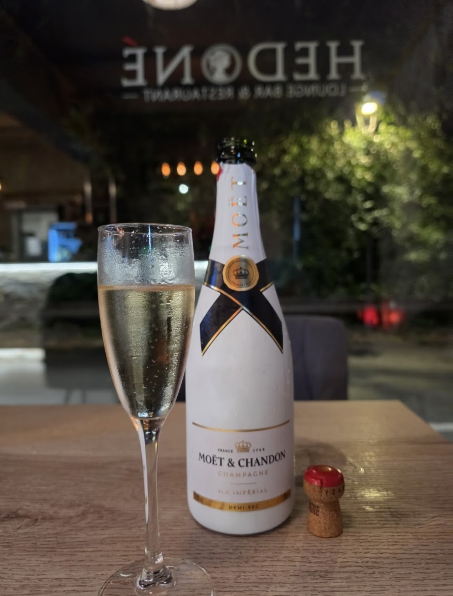
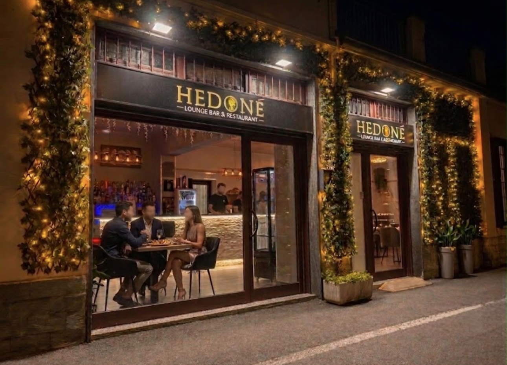
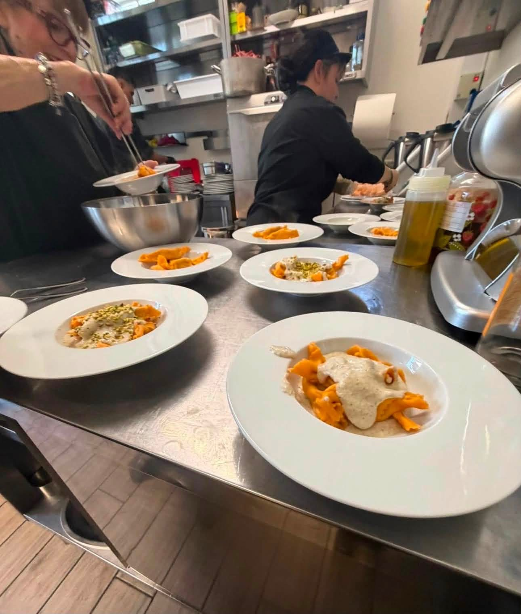
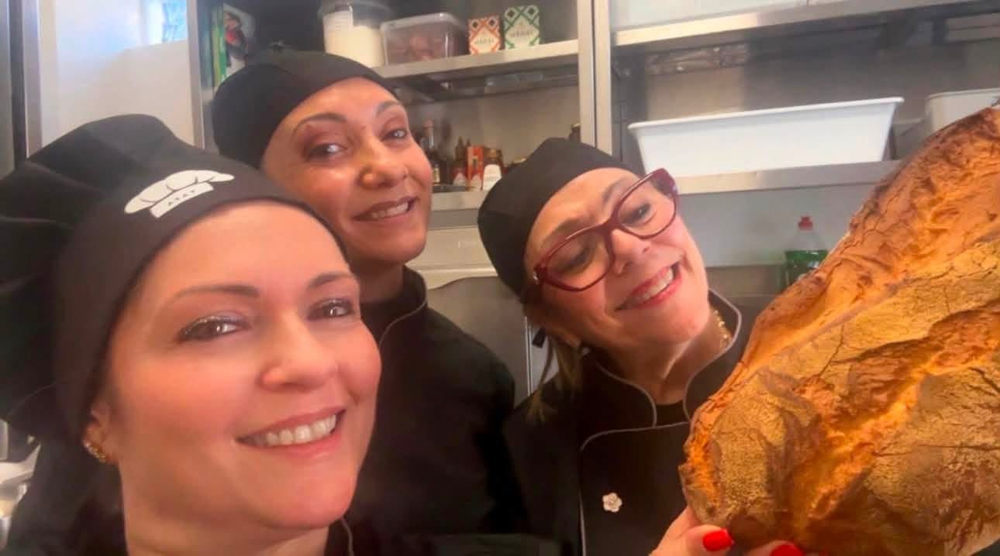
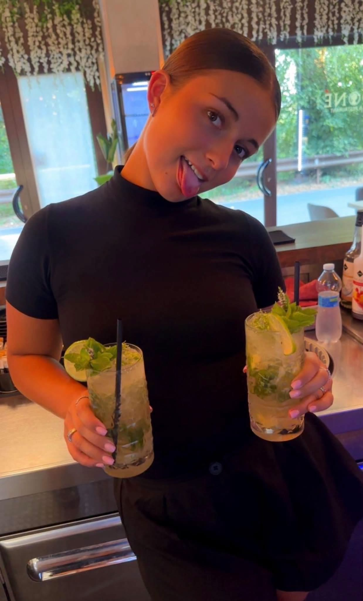
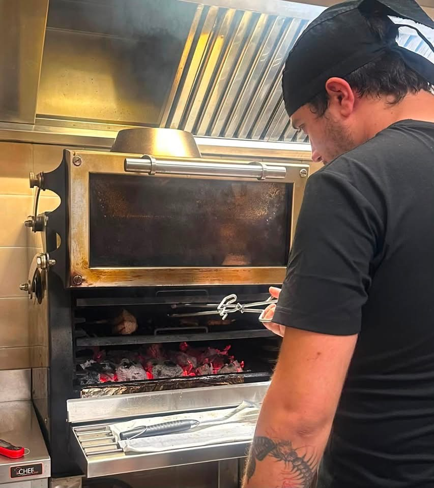
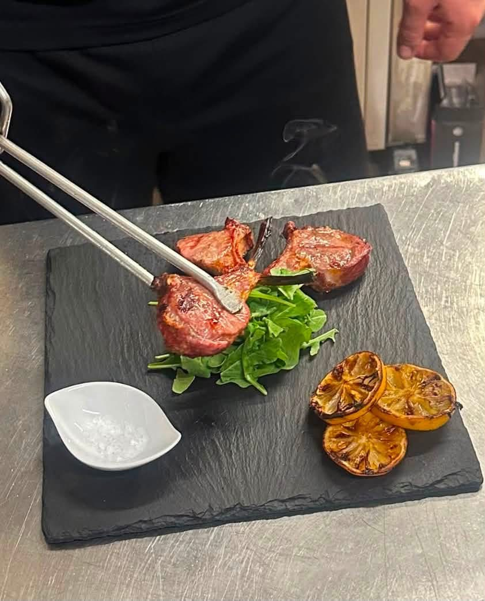

Chi siamo
Chi siamo
La cucina, il bancone e le persone che ogni sera danno forma a Hedoné — oltre il nome, oltre il piatto.
Tartare di Fassona, Fiorentina, picanha, filetto e grigliata mista. Materia prima selezionata, tradizione italiana, ogni piatto costruito per essere ricordato.









"La serata giusta non si ordina dal menù. La costruiamo insieme."
Al bancone e tra i tavoli trovi le stesse persone da anni. Non semplice personale: volti che ricordano il tuo vino preferito, che capiscono quando proporre un cocktail in più e quando lasciare che la serata si allunghi da sola.
Vieni una sera. Capire perché si torna è più facile quando ci sei.
Scopri Serate & Eventi
Piacere
Non fretta né ostentazione, ma il risultato di una cucina curata, di un drink ben fatto, di un'atmosfera che invita a restare.

Tempo
Un valore da rispettare: a tavola, nelle conversazioni, in tutta l'esperienza — mai qualcosa da consumare in fretta.

Identità
Cucina che parte dalla tradizione italiana, materie prime scelte con cura, cocktail pensati per il momento giusto.
Luminoso e tranquillo: lo spazio ideale per un pranzo rilassato, con vista sulla Martesana.
L'atmosfera si accende: luci più calde, serate a tema e appuntamenti musicali — mai gridati, sempre curati. La musica accompagna senza invadere, il cocktail giusto completa la serata.
Qui il piacere è semplice. Ed è fatto per durare.